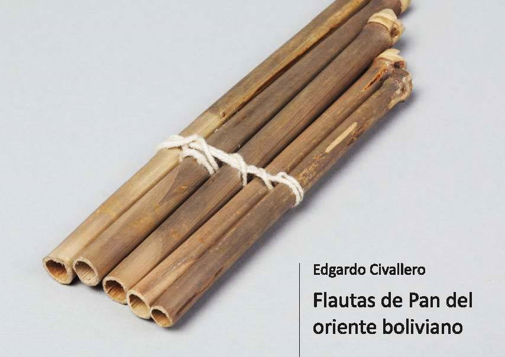

Flautas de Pan del oriente boliviano
Inicio > Libros digitales sobre música > Flautas de Pan del oriente boliviano
Cómo citar este trabajo: Civallero, Edgardo (2025). Flautas de Pan del oriente boliviano. Edición de archivo. Bogotá: El Zorro de Abajo Editora.
Descargar en PDF.
Este texto amplía el estudio de las flautas de Pan bolivianas más allá del altiplano y los valles andinos —donde predominan las zampoñas o siku— y explora su presencia, escasa pero significativa, en las tierras bajas orientales. A través de fuentes etnográficas, arqueológicas y testimonios de campo, se reconstruye un panorama poco conocido de instrumentos, repertorios y prácticas musicales entre los pueblos indígenas del Beni, Santa Cruz y áreas limítrofes, revelando un mosaico de herencias precolombinas, influencias andinas y reinterpretaciones locales.
El texto se abre con una caracterización general del contexto geográfico y cultural. Mientras el siku domina las regiones altas y su sonido encarna la sonoridad colectiva del altiplano, en el oriente boliviano —selvático, fluvial y de contacto histórico con las misiones jesuíticas— las flautas de Pan se desarrollaron de modo más aislado y disperso. Los modelos andinos influyeron en la terminología y en ciertos detalles constructivos, pero las versiones orientales mantienen una identidad propia, estrechamente ligada a mitologías locales y contextos rituales específicos.
El recorrido comienza con los Moré o Iténez de Puerto Siles (Beni), cuyo instrumento tradicional, la morao o moroa, fue descrito por Métraux en 1942 como una flauta de Pan de hasta veinte tubos, algunos largos y otros cortos, atados mediante hilo de algodón o entre varillas, formando un tipo "aberrante" de zampoña. Su notable número de tubos y su combinación de longitudes le daban un timbre característico y una escala extendida. Hoy tanto el instrumento como la cultura que lo produjo están casi extinguidos.
A continuación se abordan las caniciana de los Canichana del Beni, elaboradas con plumas de aves como el jabirú (Jabiru mycteria). Probablemente, el nombre no proviene de la lengua local sino de observadores externos, y el instrumento mismo está desaparecido.
Los Caviña o Kavineño, también del río Beni, construían flautas de Pan dobles, con hileras de ocho y siete tubos de caña, atados con hilo y asegurados por una tira de bambú que daba varias vueltas alrededor del conjunto. Este diseño, documentado por Izikowitz, evidencia un grado de sofisticación técnica y una organización sonora cercana a los sistemas andinos de ira y arka, aunque con dimensiones menores y timbre más suave.
Los Mosetén o T'simane, de la provincia José Ballivián, elaboran las llamadas siko (derivación del aymara siku), fabricadas con caña bañe'tim o tacuara (Guadua sp.). Sin embargo, este instrumento no parece ser tradicional, sino resultado de préstamos culturales recientes y de su producción artesanal para el turismo o la venta local.
En el corazón del Beni, los Moxeño o Mojo se destacan por el uso de las jerure o jeruré, flautas de Pan asociadas a la célebre Ichapekene Piesta ("Fiesta grande") de San Ignacio de Moxos. Según Métraux, los Mojo consideraban a la flauta de Pan su instrumento favorito: constaba de una hilera simple de tubos suspendidos del cuello mediante un cordón, construidos con tres cañas de tacuarilla (Chusquea ramosissima). Hoy acompañan la Danza de los macheteros, alternando su sonido con el del cayuré (flauta simple) y el chuyu'i (ocarina globular). En este caso, la flauta de Pan articula un complejo sistema ritual donde la música marca el ritmo ceremonial, la alternancia de soplos y silencios y el diálogo entre humanos y espíritus.
Los Yuracaré, en la frontera entre los departamentos de Cochabamba y Beni, utilizan una flauta de Pan registrada ya por D'Orbigny (1835), quien la asoció a una danza colectiva de hombres y mujeres. Métraux describe sus ejemplares con cinco tubos atados por una tira de caña —una ligadura semejante a la aymara— y menciona su uso en danzas y celebraciones comunitarias. En estudios posteriores, Querejazu y Cavour confirman la existencia de "zampoñas de bambú" entre los Yuracaré, aunque actualmente su uso ritual ha disminuido notablemente.
Hacia el sureste, entre los Guarayo o Gwarayu de Santa Cruz, sobreviven las secu secus o takwari, flautas de seis tubos dispuestos en dos grupos de tres, tocadas en conjuntos triples (grande, mediana y pequeña). Su organología, detallada por Mendizábal, muestra una afinación cuidadosamente escalonada. Tradicionalmente, las takwari se interpretaban en el tokai, espacio sagrado vinculado a mitos de tránsito de las almas; las flautas ayudaban simbólicamente a los muertos a superar los obstáculos del inframundo. En la actualidad, su uso se ha resemantizado en contextos cristianos, especialmente durante la Pascua, donde acompañan cantos sobre la resurrección.
Los Chiquitano o Bésiro, vecinos de los Guarayo, conservan las yoresoma (o ioresoka, yoresomanka) y las yoresorr (o seku-seku). Las primeras son flautas simples de seis tubos de tacuarilla, de 10 a 30 cm de largo; las segundas consisten en dos hileras complementarias ("madre e hija") de tres tubos cada una, equivalentes a los pares ira-arka del altiplano. Las yoresoma se tocan entre diciembre y fin de año, coincidiendo con las celebraciones de la Inmaculada Concepción, mientras que las yoresorr se utilizan de Pascua a San Pedro. Ambas acompañan danzas y ceremonias religiosas en las provincias chiquitanas, y constituyen uno de los pocos casos de persistencia activa del género en el oriente boliviano.
El texto también menciona los registros históricos de los Pauserna o Guarasugwe, pueblo en peligro de desaparición de Santa Cruz y Beni, cuyas flautas fueron recogidas durante la expedición de Nordenskjöld en 1913. Las flautas de Pan pauserna, conservadas en museos europeos, muestran estructuras de tubos simples o dobles, de caña y hueso, con ataduras vegetales, y representan una de las pocas evidencias materiales de flautas múltiples en esa región amazónica.
El texto concluye con la descripción de los Chácobo o No'iria, del norte beniano, poseedores de las sampoñas o bistó, que se tocan durante la fiesta homónima, un convite de abundancia en el que se comparte chicha de yuca. El anfitrión fabrica manojos de cinco tubos sueltos que se distribuyen entre los asistentes; la música acompaña las danzas pabëti. Los hombres ejecutan los instrumentos mientras realizan movimientos coreográficos circulares, reforzando la dimensión comunal del ritual. En la mitología chacobo, la flauta es un don del héroe cultural Kako, símbolo de generosidad y cohesión social.
Fuera de estos casos, las flautas de Pan han desaparecido de casi todas las demás etnias del oriente: Araona, Ayoreo, Baure, Esse Ejja, Itonama, Movima, Sirionó, Tacana, Tapieté, Wichí, entre otras.
En conjunto, el libro rescata un patrimonio sonoro olvidado. Las flautas de Pan del oriente boliviano —lejanas de los Andes pero profundamente emparentadas con ellos— revelan un paisaje acústico en extinción, donde cada tubo y cada soplo mantienen la memoria de antiguos ritos agrícolas, funerarios o festivos. El texto articula un relato de continuidad cultural, sin exotismos ni romanticismos: una geografía de sonidos que sobrevivieron entre los ríos y selvas del Beni, Santa Cruz y el Chaco, y que aún resuenan, intermitentes, en la respiración del oriente boliviano.